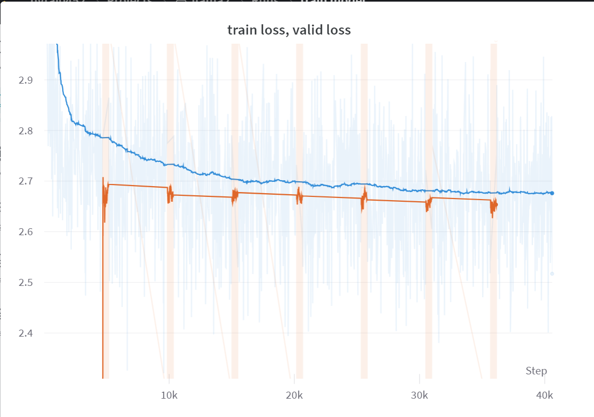

pip install transformers datasets einops pytorch_lightning wandbTrain Model
”
Trong chương này, do hạn chế về tài nguyên, chúng ta chỉ có thể huấn luyện trên một phần nhỏ của tập dữ liệu, với khoảng 165,000 câu thay vì toàn bộ. Sau gần 6 giờ huấn luyện, tôi vẫn chưa chắc chắn liệu mình đang làm đúng hay không vì model vẫn chỉ mắc kẹt ở giá trị loss là 2.7. Tuy nhiên, do anh Karpathy đang trong quá trình thực hiện video giảng về LLAMA2, vì vậy tôi quyết định tạm dừng dự án tại đây. Tôi sẽ quay trở lại cải thiện model và dự án của mình sau khi xem video về llama2 của anh Karpathy được đăng tải.
import torch
import torch.nn as nn
from transformers import AutoTokenizer
from datasets import load_dataset
import torch.nn.functional as F
from torch.utils.data import Dataset, DataLoader
import multiprocessing
import pytorch_lightning as pl
import wandb
from einops import rearrange # einstein operationfrom huggingface_hub import notebook_login
notebook_login()class ModelArgs:
def __init__(self):
self.check_point_per_batch = 2000
self.learning_rate = 0.0003
self.n_epochs = 30
self.n_head = 4 #32
self.n_embd = 512 #4096
self.max_sequence_len = 256 #2048
self.multiple_of = 32 #256
self.rotary_dim = 64 # head_dim // 2 (head_dim = n_embd // n_head)
self.n_layer = 4 #32
self.batch_size = 32 #32
self.vocab_size = 32000
self.norm_eps = 1e-5
self.initializer_range = 0.02
args = ModelArgs()sample_train = 150_000
sample_val = int(.1 * sample_train)
tokenizer = AutoTokenizer.from_pretrained("meta-llama/Llama-2-7b-chat-hf")
dataset = load_dataset("roneneldan/TinyStories")
tokenizer.pad_token = tokenizer.eos_token
subset_trainset = dataset['train'][:sample_train]['text']
subset_valset = dataset['validation'][:sample_val]['text']
tokenized_trainset = tokenizer(
subset_trainset,
return_tensors='pt',
padding='max_length', # Pad sequences to the max_seq_length
truncation=True, # Truncate sequences if they exceed max_seq_length
max_length=args.max_sequence_len # Set the maximum sequence length
)
tokenized_valset = tokenizer(
subset_valset,
return_tensors='pt',
padding='max_length', # Pad sequences to the max_seq_length
truncation=True, # Truncate sequences if they exceed max_seq_length
max_length=args.max_sequence_len # Set the maximum sequence length
)Repo card metadata block was not found. Setting CardData to empty.
WARNING:huggingface_hub.repocard:Repo card metadata block was not found. Setting CardData to empty.class CustomDataset(Dataset):
def __init__(self, data):
self.data = data
def __len__(self):
return len(self.data)
def __getitem__(self, idx):
return self.data[idx]
custom_trainset = CustomDataset(tokenized_trainset['input_ids'])
custom_valset = CustomDataset(tokenized_valset['input_ids'])
cpu_count = multiprocessing.cpu_count()
train_loader = DataLoader(custom_trainset, batch_size=args.batch_size, shuffle=True, num_workers=cpu_count)
val_loader = DataLoader(custom_valset, batch_size=args.batch_size, num_workers=cpu_count)class Embedding(nn.Module):
def __init__(self, args:ModelArgs):
super().__init__()
self.wte = nn.Embedding(args.vocab_size, args.n_embd)
def forward(self, input_ids):
input_shape = input_ids.shape[-1]
input_ids = input_ids.view(-1, input_shape)
hidden_states = self.wte(input_ids)
return hidden_statesclass RotaryEmbedding(nn.Module):
def __init__(self, args:ModelArgs, base = 10000):
super().__init__()
self.rotary_dim = args.rotary_dim
inv_freq = 1.0 / (base ** (torch.arange(0, self.rotary_dim, 2) / self.rotary_dim ))
self.register_buffer("inv_freq", inv_freq)
self.cos_cache = None
self.sin_cache = None
def forward(self, qkv):
seqlen = qkv.shape[1]
# Update cos sin cache
t = torch.arange(seqlen, device = qkv.device)
freqs = torch.outer(t, self.inv_freq)
self.cos_cache = torch.cos(freqs)
self.sin_cache = torch.sin(freqs)
# Apply rotary qkv
rotary_dim = self.cos_cache.shape[1]
rotary_dim *= 2
q_rot = qkv[:, :, 0, :, :rotary_dim]
q_pass = qkv[:, :, 0, :, rotary_dim:]
k_rot = qkv[:, :, 1, :, :rotary_dim]
k_pass = qkv[:, :, 1, :, rotary_dim:]
# Splits the queries and keys in half
q1, q2 = q_rot.chunk(2, dim=-1)
k1, k2 = k_rot.chunk(2, dim=-1)
c, s = rearrange(self.cos_cache, "t d -> t 1 d"), rearrange(self.sin_cache, "t d -> t 1 d")
# Computes the new keys and queries
q_rot = torch.cat([q1 * c - q2 * s, q1 * s - q2 * c], dim=-1)
k_rot = torch.cat([k1 * c - k2 * s, k1 * s - k2 * c], dim = -1)
return torch.cat(
[
torch.cat([q_rot, q_pass], dim=-1).unsqueeze(2),
torch.cat([k_rot, k_pass], dim=-1).unsqueeze(2),
qkv[:, :, 2:3, :, :]
],
dim=2
)class RMSNorm(torch.nn.Module):
def __init__(self, dim: int, eps: float = 1e-6):
super().__init__()
self.eps = eps
self.weight = nn.Parameter(torch.ones(dim))
def _norm(self, x):
return x * torch.rsqrt(x.pow(2).mean(-1, keepdim=True) + self.eps)
def forward(self, x):
output = self._norm(x.float()).type_as(x)
return output * self.weightclass Attention(nn.Module):
def __init__(self, args:ModelArgs):
super().__init__()
self.head_dim = args.n_embd // args.n_head
opt_size = args.n_head * self.head_dim
hidden_size = args.n_embd
self.rotary_emb = RotaryEmbedding(args)
self.Wqkv = nn.Linear(hidden_size, 3 * opt_size)
self.out_proj = nn.Linear(opt_size, hidden_size)
def forward(self, hidden_states):
qkv = self.Wqkv(hidden_states)
qkv = rearrange(qkv, 'b t (three h d) -> b t three h d', three=3, d=self.head_dim)
# Rotary Query & Key
qkv = self.rotary_emb(qkv)
q, k, v = qkv.unbind(2)
output = F.scaled_dot_product_attention(q, k, v, is_causal=True)
output = rearrange(output, "... h d -> ... (h d)")
attn_out = self.out_proj(output)
return attn_outclass FeedForward(nn.Module):
def __init__(self, args:ModelArgs):
super().__init__()
hidden_dim = 4 * args.n_embd
hidden_dim = int(2 * hidden_dim / 3)
hidden_dim = args.multiple_of * ((hidden_dim + args.multiple_of - 1) // args.multiple_of)
self.w1 = nn.Linear(args.n_embd, hidden_dim, bias=False)
self.w2 = nn.Linear(hidden_dim, args.n_embd, bias=False)
self.w3 = nn.Linear(args.n_embd, hidden_dim, bias=False)
self.act = nn.SiLU()
def forward(self, hidden_states):
hidden_states = self.w1(hidden_states) * self.w3(hidden_states)
hidden_states = self.act(hidden_states)
ffwd_out = self.w2(hidden_states)
return ffwd_outclass TransfomerBlock(nn.Module):
def __init__(self, args:ModelArgs):
super().__init__()
self.attention_norm = RMSNorm(args.n_embd, args.norm_eps)
self.ffwd_norm = RMSNorm(args.n_embd, args.norm_eps)
self.attn = Attention(args)
self.ffwd = FeedForward(args)
def forward(self, input_ids_embd):
attn_out = input_ids_embd + self.attn(self.attention_norm(input_ids_embd))
ffwd_out = attn_out + self.ffwd(self.ffwd_norm(attn_out))
return ffwd_outclass TransformerHead(nn.Module):
def __init__(self, args:ModelArgs):
super().__init__()
self.norm = RMSNorm(args.n_embd, args.norm_eps)
self.linear = nn.Linear(args.n_embd, args.vocab_size)
def forward(self, hidden_states):
hidden_states = self.norm(hidden_states)
logits = self.linear(hidden_states)
return logitsclass TransformerSequential(nn.Module):
def __init__(self, args):
super().__init__()
self.initializer_range = args.initializer_range
modules = [Embedding(args)]
modules += [TransfomerBlock(args) for _ in range(args.n_layer)]
modules.append(TransformerHead(args))
self.layers = nn.Sequential(*modules)
self.apply(self._init_weights)
def forward(self, input_ids):
return self.layers(input_ids)
def _init_weights(self, module):
if isinstance(module, nn.Linear):
module.weight.data.normal_(mean=0.0, std=self.initializer_range)
if module.bias is not None:
module.bias.data.zero_()
elif isinstance(module, nn.Embedding):
module.weight.data.normal_(mean=0.0, std=self.initializer_range)class TransformerLoss(nn.Module):
def __init__(self):
super().__init__()
self.loss_fct = nn.CrossEntropyLoss()
def forward(self, logits, labels, shift_labels = True):
if shift_labels:
logits = logits[..., :-1, :].contiguous()
labels = labels[..., 1:].contiguous()
logits = logits.view(-1, logits.shape[-1])
labels = labels.view(-1)
loss = self.loss_fct(logits, labels)
return lossclass ModelForVisualization(pl.LightningModule):
def __init__(self, args):
super().__init__()
self.learning_rate = args.learning_rate
self.ck_point_per_batch = args.check_point_per_batch
self.model = TransformerSequential(args)
self.t_loss = TransformerLoss()
def forward(self, input_ids):
return self.model(input_ids)
def training_step(self, batch, batch_idx):
input_ids = batch
logits = self(input_ids)
loss = self.t_loss(logits, input_ids)
wandb.log({"train loss": loss})
# Checkpoint to W&B
if batch_idx % self.ck_point_per_batch == 0:
self.save_checkpoint(f"checkpoint_{batch_idx}.ckpt")
return loss
def validation_step(self, batch):
input_ids = batch
logits = self(input_ids)
loss = self.t_loss(logits, input_ids)
wandb.log({"valid loss": loss})
return loss
def configure_optimizers(self):
optimizer = torch.optim.Adam(
self.model.parameters(),
lr=self.learning_rate,
)
return optimizer
def save_checkpoint(self, filename):
checkpoint = {'state_dict': self.state_dict()}
torch.save(checkpoint, filename)
wandb.save(filename)wandb.login()
args = ModelArgs()
name = "train model"
wandb.init(project="llama2", config=args, name=name)
model = ModelForVisualization(args)
trainer = pl.Trainer(max_epochs=args.n_epochs)
trainer.fit(model, train_loader, val_loader)
wandb.finish()wandb: Logging into wandb.ai. (Learn how to deploy a W&B server locally: https://wandb.me/wandb-server)
wandb: You can find your API key in your browser here: https://wandb.ai/authorize
wandb: Paste an API key from your profile and hit enter, or press ctrl+c to quit:wandb: Appending key for api.wandb.ai to your netrc file: /root/.netrc
wandb: Currently logged in as: nvtai0452. Use `wandb login --relogin` to force relogin
INFO:pytorch_lightning.utilities.rank_zero:GPU available: True (cuda), used: True
INFO:pytorch_lightning.utilities.rank_zero:TPU available: False, using: 0 TPU cores
INFO:pytorch_lightning.utilities.rank_zero:IPU available: False, using: 0 IPUs
INFO:pytorch_lightning.utilities.rank_zero:HPU available: False, using: 0 HPUs
WARNING:pytorch_lightning.loggers.tensorboard:Missing logger folder: /content/lightning_logs
INFO:pytorch_lightning.accelerators.cuda:LOCAL_RANK: 0 - CUDA_VISIBLE_DEVICES: [0]
INFO:pytorch_lightning.callbacks.model_summary:
| Name | Type | Params
-------------------------------------------------
0 | model | TransformerSequential | 45.5 M
1 | t_loss | TransformerLoss | 0
-------------------------------------------------
45.5 M Trainable params
0 Non-trainable params
45.5 M Total params
181.845 Total estimated model params size (MB) ··········
Tracking run with wandb version 0.15.12
Run data is saved locally in
/content/wandb/run-20231018_121605-42l26vl1
View project at https://wandb.ai/nvtai0452/llama2
View run at https://wandb.ai/nvtai0452/llama2/runs/42l26vl1